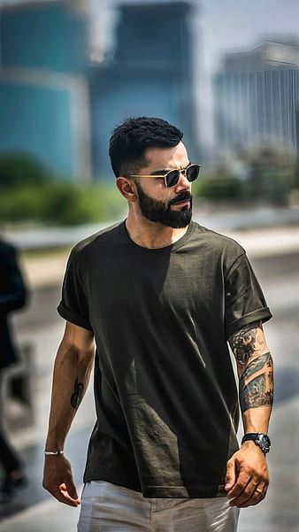

Virat Kohli
Nationality: Indian
Career Stats:
Runs
- 116 Tests: 8947 runs
- 295 ODIs: 13906 runs
- 125 T20Is: 4188 runs
- 147 FC: 11196 runs
- 252 IPL: 8004 runs
Bowls
- 116 Tests: 0 wkts
- 295 ODIs: 5 wkts
- 125 T20Is: 4 wkts
- 252 IPL: 4 wkts
Achievements:
Awards
- Padma Shri(2017)
- Wisden Cricketers of the Year(2019)
- ICC Men's ODI Cricketer of the Year(2012)
- Arjuna Award for Cricket(2013)
- Sir Garfield Sobers Trophy(2018)
- Major Dhyan Chand Khel Ratna Award for Cricket(2018)
- Wisden Leading Cricketer in the World(2018, 2017)
- ICC Male Cricketer of the Decade(2020)
- CNN-IBN Indian of the Year Popular Choice Award(2017)
- People's Choice Awards India for Favorite Sportsperson(2012)
- CNN-IBN Indian of the Year(2017)